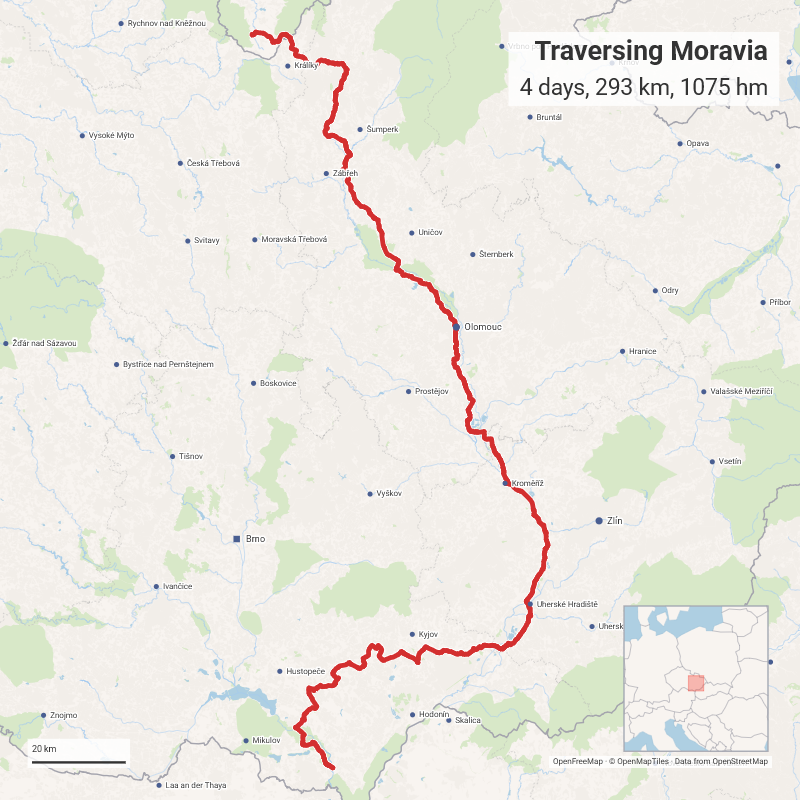

🇨🇿 Traversing Moravia¶
Most visitors of the Czech Republic head for Bohemia and Prague - while Moravia sees far fewer of them. It takes its name from the river Morava, and this tour follows that river's logic: It begins in the Sudetes on the Polish border, where the hills form the country's northern rim, and works its way down to Břeclav near the Austrian border.
Along the way the landscape shifts from forested uplands to the open to the rolling farmland of the so-called Moravian Tuscany - South Moravia's wine country. It finishes in the Lednice-Valtice estate, a vast designed landscape of palace, park and follies. It is one region, but you will feel as though you have crossed several.
You can extend the tour with 🇪🇺 Four Countries. It also starts in the same place as 🇵🇱 South Lower Silesia.
| Website | GPX | Distance | Ascend | Net Ascend | |
|---|---|---|---|---|---|
| Day 1: Olomouc | bikerouter.de | 108 km | 517 hm | -224 hm | |
| Day 2: Kroměříž | bikerouter.de | 45 km | 74 hm | -19 hm | |
| Day 3: Velké Pavlovice | bikerouter.de | 111 km | 470 hm | -16 hm | |
| Day 4: Břeclav | bikerouter.de | 29 km | 14 hm | -18 hm |

Day 0: Międzylesie 🇵🇱¶
While staying in Prague is an option, you can also sleep (a bit longer) in the quiet, but charming village of Międzylesie.
Day 1: Międzylesie 🇵🇱 - Olomouc¶
After crossing the border through the southern foothills of the Glatz Snow Mountains, the route follows the Morava. Meandering through valleys, forests and villages, it turns from a small stream to a river.
Crossing the border
The route between Potoczek and the Border is a small and stony path - but shouldn't be a problem with a Trekking bike. Only in the steepest parts you might have to push your bicycle for a couple of meters. Right after the border there are a few meters where the route consists of "flattened gras". But another path starts behind the tree group.
South of Postřelmov
The stretch south of Postřelmov (at the Morava) is very bumpy (like it is a construction site). You can avoid it by turning south right before Postřelmov and follow the road 3702.
Leština to Úsov
Road 315 between Leština and Úsov does not have a lot of traffic - but the cars are driving fast. If you want to avoid this stretch, stay on the EV9 (close to the Morava) until Litovel.
Sights¶
- Ruda nad Moravou Castle
- Bludov Chateau
- Úsov Castle
- Olomouc
- Lower Square (Dolní náměstí)
- Upper Square (Horní náměstí) with City Hall and Holy Trinity Column
- Church of Saint Maurice with lookout tower
- Wenceslas Square (Václavské námesty) with Saint Wenceslas Cathedral and Archdiocesan Museum
Food and accommodation¶
With the Holba brewery in view and good food at low prices, Pivovarská restaurace Holba1 makes a great lunch place. IN-KAFE2 provides an opportunity for a final break with coffee and cake. Alternatively have a Litovel beer in Litovel.
As you may have guessed, Olomouc also has a brewery: Svatováclavský pivovar3 offers Czech classics and homemade beer. Order the mixbeer if you feel adventurous. If you are looking for a Moravian fine dining (or lunch) option, Moravská restaurace4 (directly at the Upper Square) might be for you.
Penzion Na Hradě5 is located directly in the city center, and its little backyard garden is like an oasis in the city. Bicycle storage: In the backyard garden.
Day 2: Olomouc - Kroměřힶ
Relaxation day: Give yourself some time to explore Olomouc before the route continues along the Morava.
Sights¶
- Hradecký Ponds
- Tovačov Castle
- Chropyně Castle
- Kroměříž
- Archbishop's Castle with Gardens
Food and accommodation¶
If you feel it's time for another brewery, Pivovar ČERNÝ OREL6 directly at the main square offers Czech classics, to wash down with its own beer.
Hotel Purkmistr7 is located at the main square and pairs clean and spacious rooms with a very good breakfast. Bicycle storage: In the courtyard (covered).
Day 3: Kroměříž - Velké Pavlovice¶
A long but rewarding and varied day lies ahead: The first half of the route follows the Morava - by now an impressive river - and its little offspring: The Bata channel. At Uherský Ostroh it leaves the river and starts heading through the underappreciated Moravian Tuscany: Small castles, rolling hills and excellent wine await!
Mistřín to Šardice and Čejč to Kobylí
There is some traffic of fast driving cars on the roads 421 and 422. The route covers only a small stretches - but ride carefully!
Sights¶
- Aviation Museum in Kunovicich
- Uherský Ostroh Castle
- Bzenec Castle
- Milotice Chateau
- Soudek Observation Tower
- Stezka nad vinohrady Lookout
- Vrbice
- Windmill
- Wine Cellars
- Slunečná Lookout
Food and accommodation¶
Kavárna na ZÁMKU8 is a good Opportunity to fill-up on carbs and caffein, before heading into the hills. Hostinec u Draka9 offers very good food and even better wine near the Milotice Chateau. Restaurace Hovoranský Hostinec10 allows you to reward yourself after the steep climbs arround Soudek Observation Tower (did I mention the great wine?).
Penzión André11 offers the most Tuscan stay you can get: A small winery in the middle of a vineyard. The restaurant is high class, and you try the André - a wine that has been cultivated here. Perfect to wind down after the tour. Bicycle storage: In the spacious boiler room.
Alternative route¶
If your legs ask for less height meters, you can take this route (101 km | 179 hm | -17 hm). Be aware though, that you are missing all great viewpoints.
You can shorten the tour to three days by taking a route (103 km | 81 hm | -39 hm) that follows the river Morava until Břeclav
Day 4: Velké Pavlovice - Břeclav¶
For the Epilogue, the landscape changes once again: From the agricultural Landscape of the wine region into the Lednice-Valtice forests.
Sights¶
Food¶
Park Restaurant12 makes a good place to fill-up before your train ride. But remember: You are back in beer territory.
Alternative route¶
If you have time and energy for another view, this route (38 km | 132 hm | -19 hm) includes Hradištěk Viewpoint.
Alternative tour¶
This route (240 km | 1071 hm | -299 hm) goes through Brno and Mikulov instead of Olomouc. If you want to see Olomouc and Mikulov take a look at this route (265 km | 1132 hm | -300 hm). Both skip the Moravian Tuscany.
-
Pivovarská restaurace Holba, Zábřežská 265, 788 33 Hanušovice ↩
-
IN-KAFE, Nám. Př. Otakara 793/7, 784 01 Litovel ↩
-
Svatováclavský pivovar, Mariánská 845/4, 779 00 Olomouc 9 ↩
-
Moravská restaurace, Horní nám. 23, 779 00 Olomouc 9 ↩
-
Penzion Na Hradě, Michalská 207, 779 00 Olomouc 9 ↩
-
Pivovar ČERNÝ OREL, Velké nám. 24, 767 01 Kroměříž 1 ↩
-
Hotel Purkmistr, Velké nám. 42, 767 01 Kroměříž 1 ↩
-
Kavárna na ZÁMKU, Zámecká 24, 687 24 Uherský Ostroh ↩
-
Hostinec u Draka, Zámecká 7, 696 05 Milotice u Kyjova ↩
-
Restaurace Hovoranský Hostinec, Hovorany 131, 696 12 Hovorany ↩
-
Penzión André, Pod břehy 565, 691 06 Velké Pavlovice ↩
-
Park Restaurant, sady 28. října 720/16, 690 02 Břeclav 2 ↩